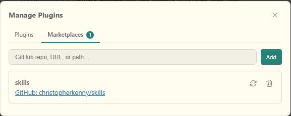
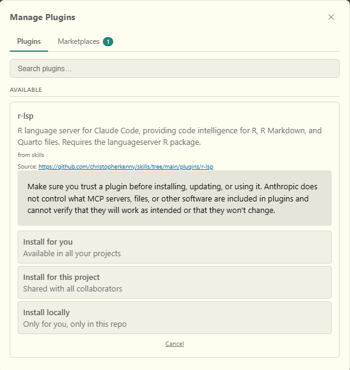

Using an R language server with Claude Code
Giving
![]()
Claude Code recently added support for the Language Server Protocol (LSP), which changes how the tool interacts with a codebase. In general, Claude navigates by searching text. With an LSP, it can jump to definitions, find all references to a symbol, and receive live diagnostics as it edits files. To use it, you need an LSP for your language (today: R). One choice that works is the languageserver package.
An LSP provides autocompletion, inline diagnostics, and go-to-definition features. If you use an IDE, like RStudio or Positron, this is probably the behavior you’re used to as a human code writer, even if you haven’t thought about it before. The LSP is the implementation of a standard that separates the tooling from the editor. The benefit is that any tool that implements the full protocol can use the same underlying server.
Ideally, I would write this to support ark, Posit’s R kernel+LSP that’s used in Positron. At the moment, I don’t believe it can be decoupled and used directly for this, based on some of the open issues on GitHub. As such, this post covers using languageserver in the meantime.
The benefit is that once it’s connected, Claude Code can use LSP operations as it goes rather than text search when working with your code. It can jump to where a function is defined rather than guessing from context, find every call site for a symbol across the project, and see diagnostics immediately when it edits a file. This is most useful in larger codebases where functions are spread across many files, or where understanding a piece of code requires tracing through several layers of function calls. In theory, this should reduce the cases where pieces of an update are missed, since it will get tool-based feedback.
Setup
Install the languageserver R package:
install.packages('languageserver')LSP support in Claude Code is not enabled by default. Add ENABLE_LSP_TOOL to your global user settings file (~/.claude/settings.json on macOS/Linux, C:/Users/<username>/.claude/settings.json on Windows), creating the file if it does not exist:
{
"env": {
"ENABLE_LSP_TOOL": "1"
}
}Then install the plugin from my christopherkenny/skills marketplace. You can also download (and optionally edit) the files for the plugin and install locally.
To install the plugin with the Positron or VSCode extension:
- Type
/plugins-> Manage Plugins - Tab over to “marketplace”
- Enter “christopherkenny/skills”. It should then look like:

- Go to the Plugins tab and select
r-lsp. You can now pick global versus per project:

- Restart Claude Code after installing.
If you’re using the terminal:
- Run the following:
claude plugin marketplace add christopherkenny/skills
claude plugin install r-lsp@christopherkenny/skills- Restart Claude Code after installing.
Verifying it works
The LSP works passively: when Claude edits an .R file, the language server analyzes the result and pushes diagnostics back automatically. You do not need to ask for it explicitly. If lintr is installed, you will also get linting feedback alongside the language server’s own warnings.1
To confirm the server started correctly, check the debug log after launching Claude Code and look for:
LSP server plugin:r-lsp:r initialized
LSP server instance started: plugin:r-lsp:rIf you’re using the terminal, you should be able to check with claude --debug. In Positron or VS Code, open the Claude Code extension log via the Output panel. To see the output panel: ctrl+shift+P -> “View: Toggle Output” -> select “Claude VSCode” from the dropdown.
That’s it. It should just work. To see plugins for other languages, search “lsp” on Anthropic’s official plugins GitHub.
Footnotes
Citation
@online{kenny2026,
author = {Kenny, Christopher T.},
title = {Using an {R} Language Server with {Claude} {Code}},
date = {2026-03-08},
url = {https://christophertkenny.com/posts/2026-03-08-r-lsp-claude/},
langid = {en}
}